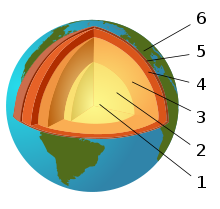
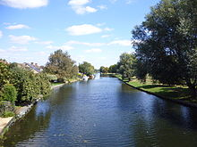
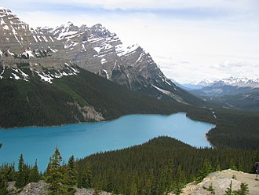
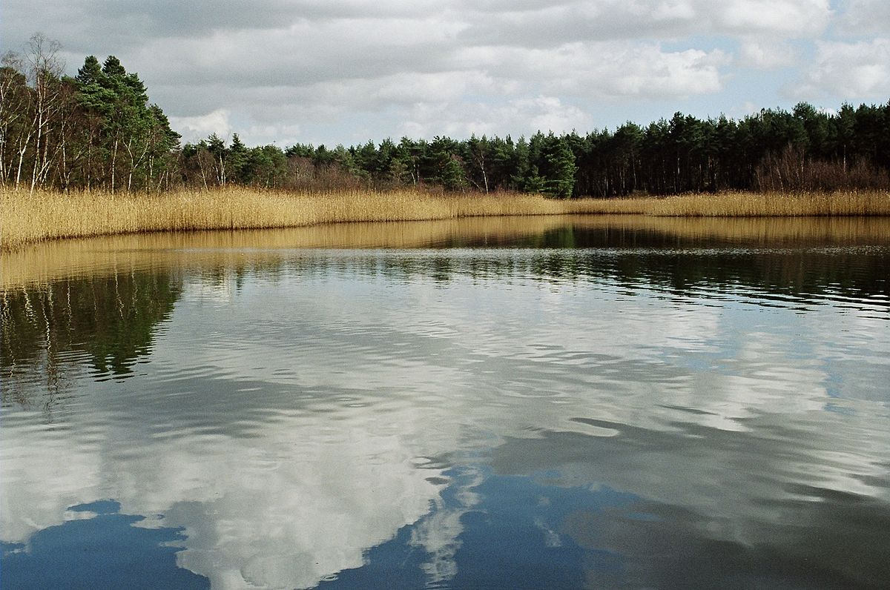

Composition...
Geological activity...
The Earth's crust, or lithosphere, is the outermost solid surface of the planet and is chemically and mechanically different from underlying mantle. It has been generated greatly by igneous processes in which magma cools and solidifies to form solid rock. Beneath the lithosphere lies the mantle which is heated by the decay of radioactive elements. The mantle though solid is in a state of rheic convection. This convection process causes the lithospheric plates to move, albeit slowly. The resulting process is known as plate tectonics. Volcanoes result primarily from the melting of subducted crust material or of rising mantle at mid-ocean ridges and mantle plumes.
Water on Earth...
Oceans...

An ocean is a major body of saline water, and a component of the hydrosphere. Approximately 71% of the Earth's surface (an area of some 362 million square kilometers) is covered by ocean, a continuous body of water that is customarily divided into several principal oceans and smaller seas. More than half of this area is over 3,000 meters (9,800 ft) deep. Average oceanic salinity is around 35 parts per thousand (ppt) (3.5%), and nearly all seawater has a salinity in the range of 30 to 38 ppt. Though generally recognized as several 'separate' oceans, these waters comprise one global, interconnected body of salt water often referred to as the World Ocean or global ocean.[5][6] The deep seabeds are more than half the Earth's surface, and are among the least-modified natural environments. The major oceanic divisions are defined in part by the continents, various archipelagos, and other criteria: these divisions are (in descending order of size) the Pacific Ocean, the Atlantic Ocean, the Indian Ocean, the Southern Ocean and the Arctic Ocean.
RIVERS...
A river is a natural watercourse,[7] usually freshwater, flowing toward an ocean, a lake, a sea or another river. A few rivers simply flow into the ground and dry up completely before reaching another body of water.
The water in a river is usually in a channel, made up of a stream bed between banks. In larger rivers there is also a wider floodplain shaped by waters over-topping the channel. Flood plains may be very wide in relation to the size of the river channel. Rivers are a part of the hydrological cycle. Water within a river is generally collected from precipitation through surface runoff, groundwater recharge, springs, and the release of water stored in glaciers and snowpacks. Small rivers may also be termed by several other names, including stream, creek and brook. Their current is confined within a bed and stream banks. Streams play an important corridor role in connecting fragmented habitats and thus in conserving biodiversity. The study of streams and waterways in general is known as surface hydrology.
Lakes...
A lake (from Latin lacus) is a terrain feature, a body of water that is localized to the bottom of basin. A body of water is considered a lake when it is inland, is not part of an ocean, and is larger and deeper than a pond.
Natural lakes on Earth are generally found in mountainous areas, rift zones, and areas with ongoing or recent glaciation. Other lakes are found in endorheic basins or along the courses of mature rivers. In some parts of the world, there are many lakes because of chaotic drainage patterns left over from the last Ice Age. All lakes are temporary over geologic time scales, as they will slowly fill in with sediments or spill out of the basin containing them.
PONDS...
A pond is a body of standing water, either natural or man-made, that is usually smaller than a lake. A wide variety of man-made bodies of water are classified as ponds, including water gardens designed for aesthetic ornamentation, fish ponds designed for commercial fish breeding, and solar ponds designed to store thermal energy. Ponds and lakes are distinguished from streams by their current speed. While currents in streams are easily observed, ponds and lakes possess thermally driven micro-currents and moderate wind driven currents. These features distinguish a pond from many other aquatic terrain features, such as stream pools and tide pools.
Human impact on water
Humans impact the water in different ways such as modifying rivers (through dams and stream channelization), urbanization, and deforestation. These impact lake levels, groundwater conditions, water pollution, thermal pollution, and marine pollution. Humans modify rivers by using direct channel manipulation.[11] They are building dams and reservoirs and manipulating the direction of the rivers and water path. Dams are good for humans, some communities need the reservoirs to survive. However, reservoirs and dams may negatively impact the environment and wildlife. Dams stops fish migration and the moving of organisms down stream. Urbanization effects the environment because of deforestation and changing lake levels, groundwater conditions, etc. Deforestation and urbanization go hand in hand. Deforestation may cause flooding, declining stream flow, and changes in riverside vegetation. The changing vegetation occurs because when trees cannot get adequate water they start to deteriorate, leading to a decreased food supply for the wildlife in an area.